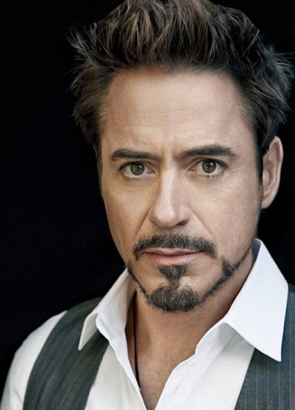
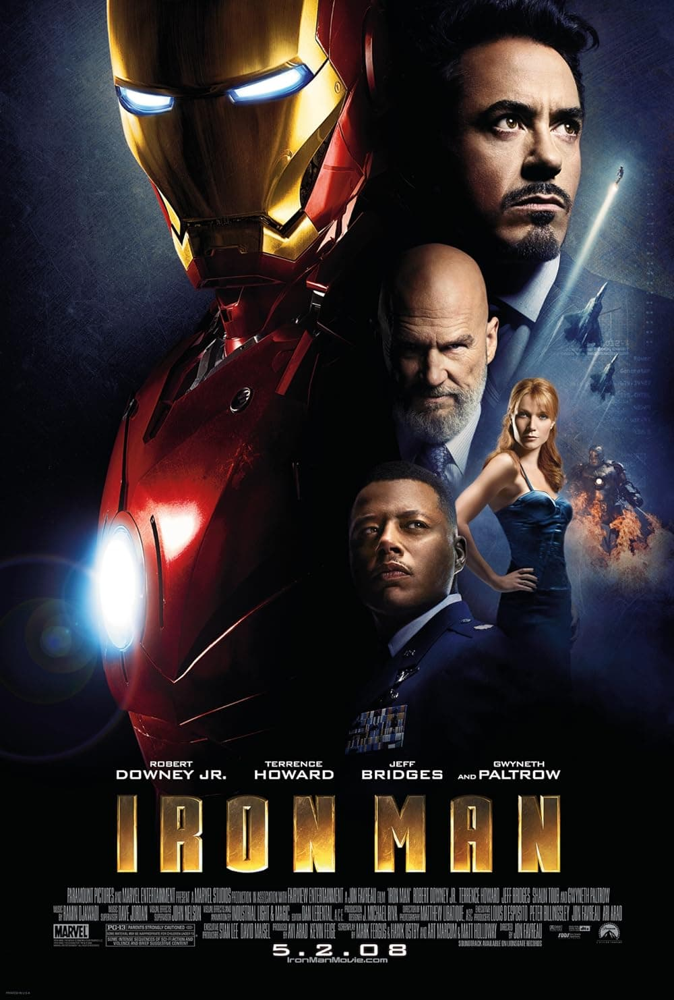
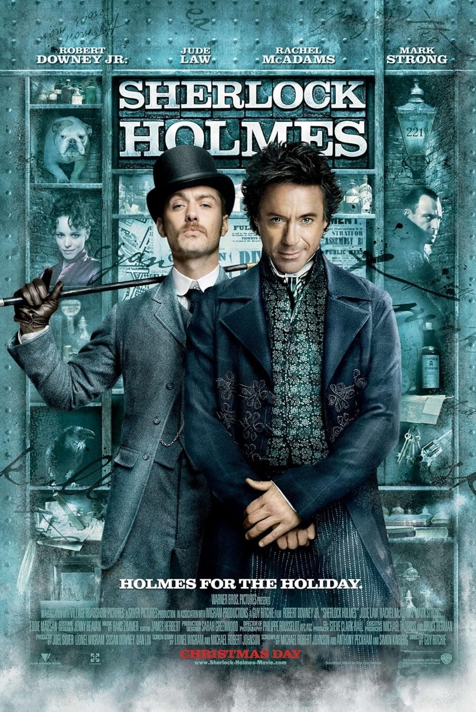
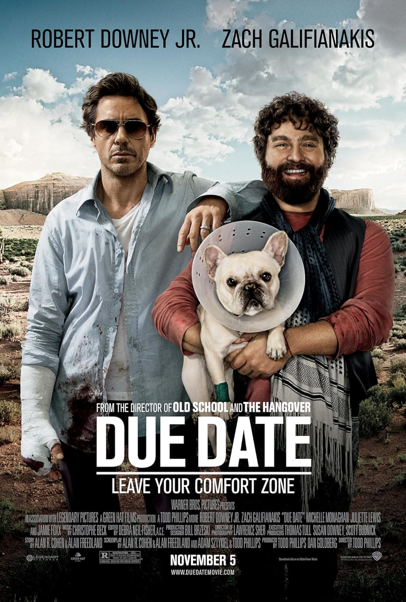
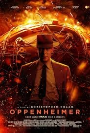
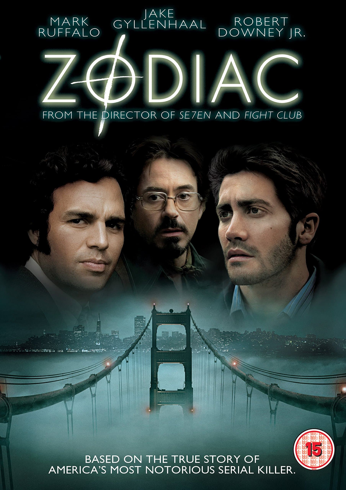
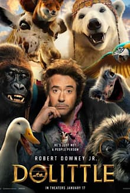
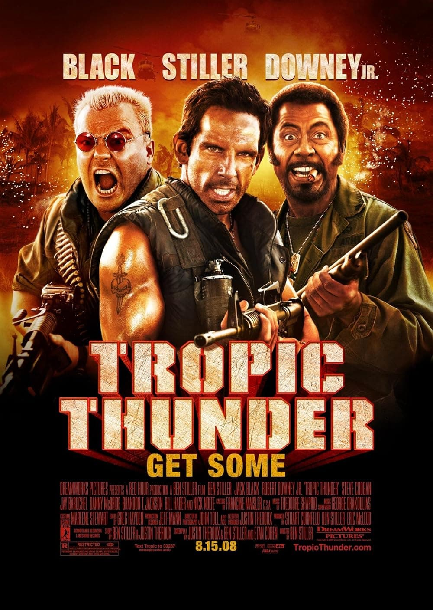
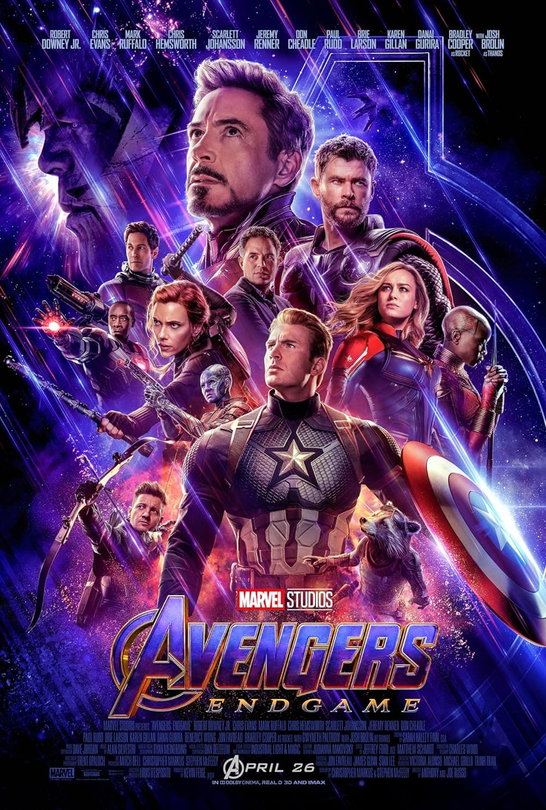
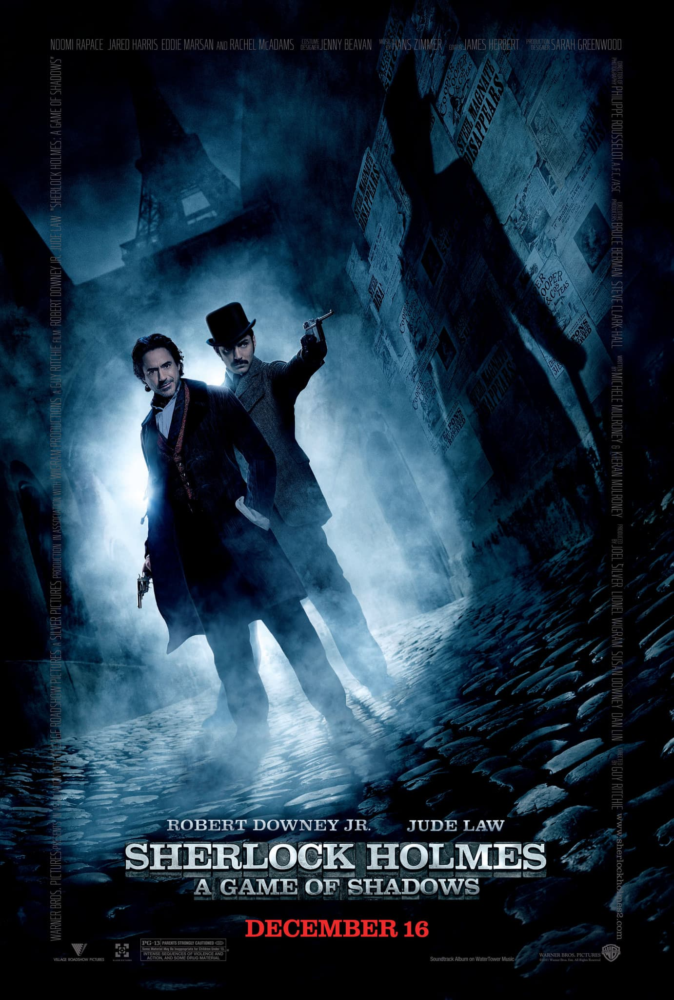

Біографія
Народився 4 квітня 1965 у родині незалежного режисера Роберта Дауні-старшого. Роберт — друг дитинства Мобі. Справжнє прізвище — Елаяс (Elias), але батько змінив його на Дауні. Його першою роллю стала невелика роль цуценяти у фільмі свого батька. Роберту було 11 років, коли батьки розлучилися і він залишився з батьком. У школі Дауні-молодший ненавидів комікси, навіть образив однокласника і розірвав його журнал з малюнками. За іронією долі це був графічний роман про Залізну Людину. У 17 залишив школу, щоб стати актором. У віці двадцяти років (в 1985 році) Дауні-мол. на один сезон приєднався до команди, що випускає найпопулярніше американське телешоу «Суботнього вечора у прямому ефірі». Після досвіду на телебаченні він остаточно вирішив зв'язати долю з кінематографом і переїхав у Голлівуд. У 1987 році Роберт Дауні-мол. одержав головну роль у комедії Джеймса Тобака «Мисливець на дівчат», після чого знявся в кількох незначних кінокартинах. Ситуація змінилася в 1992 році, коли на екрани вийшов фільм сера Річарда Аттенборо «Чаплін», у якому актор зіграв легендарного коміка. Акторська гра Дауні-молодшого захопила всіх, за що актора номінували на премію «Оскар» у категорії «Найкраща чоловіча роль». Критики й публіка називали Роберта Дауні-молодшого одним із найперспективніших акторів серед молодого покоління. Однак у цей період в актора виникає наркотична залежність, через що після низки голосних скандалів його звільняють зі студій, де він тоді знімався, а суд присуджує його до тюремного ув'язнення й примусового лікування. За словами самого Дауні-молодшого, його знайомство з марихуаною відбулося у віці 8 років не без допомоги рідного батька. На момент арешту він вже мав проблеми з героїном та кокаїном. На зйомках фільму «Любовний трикутник» (1997) Дауні щодня здавав аналіз на наявність наркотиків у крові. У 2001 році актор знявся у кліпі «I Want Love» Елтона Джона. Після проходження курсу лікування Дауні-молодший повернувся на екрани у 2004 році з фільмом «Готика», де зіграв разом з Геллі Беррі й Пенелопою Круз. У 2004 році Роберт випустив альбом «The Futurist» з піснями, які сам склав і виконав. Відгуки критиків про альбом були досить теплими. Гра актора одержала похвальні відгуки й після виходу комедійного детектива «Поцілунок навиліт». У 2006 році його виконання ролі таємничого Лайонела, що вступає у зв'язок з героїнею Ніколь Кідман у фільмі «Хутро», одержало найзахопливіші відгуки кінокритиків. Також він записав кілька пісень для різдвяного альбому «For Once In My Life» (вийшов в 2007) спільно з Вондою Шепард. Проте справжнє переродження Роберт одержує після його затвердження на головну роль у фільмі «Залізна людина». Після виходу фільму кіностудії буквально закидають актора різними пропозиціями. На зніманнях «Залізної Людини» Роберт, в якого зріст 174 см, носив підбори, щоб в кадрі виглядати вище Гвінет Пелтроу. У 2008 році виходить фільм Бена Стіллера «Грім у тропіках», в якому розповідається історія акторів, що потрапили на справжню війну, але вважають це всього лише зніманнями. Роберт зіграв у фільмі Кірка Лазуруса, п'ятикратного лауреата премії «Оскар», який заради нової ролі навіть змінив пігментацію своєї шкіри. Блискуча гра Дауні-молодшого принесла йому другу номінацію на «Оскар», номінацію на «Золотий глобус» і номінацію на приз Британської академії. У кінці 2009 року на екрани вийшов фільм Гая Річі «Шерлок Холмс», де в парі з Джудом Лоу, який грає доктора Джона Ватсона, Роберт виконав роль геніального детектива Холмса. У перший же вік-енд фільм побив всі рекорди за касовими зборами, а сам Роберт отримав премію «Золотий глобус» у номінації «Найкраща чоловіча роль — комедія або мюзикл». У 2010 році вийшов сиквел фільму знятого за коміксами «Залізна людина 2». Після цього Дауні-молодший підписався на участь в третій частині фільму і в «Месниках». У 2011 році вийшла друга частина фільму про Шерлока Холмса — «Шерлок Холмс: Гра тіней», де герой Дауні-молодшого бореться з професором Моріарті. Рік потому на широких екранах з'явилася стрічка «Месники», а також завершальна частина трилогії про Тоні Старка — «Залізна людина 3». У 2019 році, на церемонії вручення нагород «Легенда Діснею» У 2013 році здобув дві нагороди People's Choice Awards у номінації «Favorite Movie Actor» 2013, та «Favorite Superhero» 2013. У 2015 році вийшов фільм «Месники: Ера Альтрон». У 2018 і 2019 роках вийшли продовження «Месники: Війна нескінченності» і «Месники: Фінал». Актор ненадовго пішов з Marvel, щоб зіграти в першому за 6 років фільмі, не пов'язаному з кіновсесвітом. Дауні отримав роль ексцентричного медика в фентезі «Подорож Доктора Дуліттл». Герой Роберта — ветеринар, який уміє розмовляти з тваринами. У цьому образі артист замінив колегу Едді Мерфі. Прем'єра картини відбулася на початку 2020 року. У 2023 році зіграв в історичній драмі Крістофера Нолана «Оппенгеймер». За роль голови Комісії з атомної енергії США Льюїса Штрауса Роберт Дауні-молодший став фаворитом «сезону кінонагород», вигравши за неї перший «Оскар», другу премію BAFTA, третій «Золотий глобус» та одразу дві премії «Вибір критиків» — як учасник акторського ансамблю та найкращий актор другого плану
Фільми
Мій топ-10
-

Залізна людина
рік: 2008
рейтинг: 7.8
-

Шерлок Холмс
Рік: 2009
Рейтинг: 7.6
-

Встигнути до...
Рік: 2010
Рейтинг: 6.5
-

Опенгеймер
Рік:
Рейтинг:
-

Зодіак
Рік: 2007
Рейтинг: 7.7
-

Неймовірні пригоди доктора Дулітла
Рік: 2020
Рейтинг: 5.6
-

Капітан Америка: громадянська війна
Рік: 2016
Рейтинг: 7.8
-

Грім у тропіках
Рік: 2008
Рейтинг: 7.1
-

Месники: Фінал
Рік: 2019
Рейтинг: 8.4
-

Шерлок Холмс: гра тіней
Рік: 2011
Рейтинг: 7.4
media